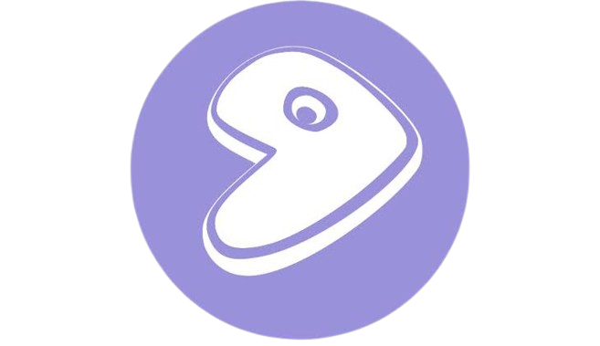

/===================\
/ >>> RisBrine404 <<< \
\=====================/
{| اَلسَّلَامُ عَلَيْكُمْ وَرَحْمَةُاللَّهِ وَبَرَكَاتُهُ |}
/---------------------\
\ [≤/≥] WELCOME [1\0] /
\___________________/

Share Hack System Technologi
Oh-Simple-Things-Where-Have-You-Gone-Lyrics-Somewhere-Only-We-Know-Keane-Cover.mp3
NAN KO PAHAM New Version.mp3
Nanti Pasti Kau Mengerti Setelah Sa Hilang (Lirik Lagu) Nan Ko Paham.mp3
lagu AIO.mp3
Chiisana Koi no Uta [Yui Aragaki] with Lyrics romanji and english sub.mp3
Kawtar - Ya Lalali (Sped Up).mp3
Nyalakan Atau Matikan Sound Sesuai Keinginan Anda
[--!!.:WARNING : BEBERAPA SCRIPT MENGALAMI ERROR.!!:--]
[---------!!.MOHON DIMAKLUMI.!!---------]
Halo selamat datang di website saya.
Dibawah ini ialah akun media sosial saya
Bila bisa tolong Bantu follow/ikuti/subscribe/like akun yang ada di bawah ini
SOCIAL MEDIA


/=======================\
/ Web Installasi Beberapa \
\ Distro Linux & Kegunaan /
\=======================/
-
 •⟩ ~Web /Kali (Kernel Auditing LInux)
Kelebihan:
•⟩ ~Web /Kali (Kernel Auditing LInux)
Kelebihan:
> Fokus ke keamanan
> Ringan dan cepat
Kekurangan:
> Tidak ramah pengguna umum
Cocok untuk: developer yang melakukan tes penetrasi/ethical hackers
Kode Tambahan Termux:
$ termux-change-repo
$ apt update && apt upgrade -y
$ pkg install neofetch
$ neofetch
Aplikasi Tambahan:
Termux F-Droid
Nethunter Store -
 •⟩ ~Web /Tails
Kelebihan:
•⟩ ~Web /Tails
Kelebihan:
> Sistem keamanan terbaik
> Ringan
Kekurangan:
> Sebagian orang mungkin tidak cocok dengan booting-nya yang cabut pasang (meskipun ini untuk keamanan)
Cocok untuk: pengguna yang mengharapkan keamanan tingkat tinggi
-
 •⟩ ~Web /Arch
Kelebihan:
•⟩ ~Web /Arch
Kelebihan:
> Mudah untuk melakukan kustomisasi
> Banyak tools advanced
> Dukungan komunitas kuat
Kekurangan:
> Butuh pengetahuan dasar tentang Linux untuk penyesuaian
Cocok untuk: pengguna advanced
-

•⟩ ~Web /Gentoo Linux
Kelebihan:
> Ringan dan cepat
> Memberi kontrol kustomisasi penuh
Kekurangan:
> Butuh pengetahuan yang cukup sebelum melakukan kustomisasi
Cocok untuk: pengguna advanced
-
 •⟩ ~Web /openSUSE
Kelebihan:
•⟩ ~Web /openSUSE
Kelebihan:
> Fitur lengkap
> Dukungan multimedia terbaik
> Implementasi paket efisien
Kekurangan:
> Bukan untuk pengguna pemula
Cocok untuk: sysadmins dan developers
-
 •⟩ ~Web /Linux Mint
Kelebihan:
•⟩ ~Web /Linux Mint
Kelebihan:
> Cocok untuk multimedia
> Sistem stabil
> Akses ringan
Kekurangan:
> Tampilan standar desktop klasik
Cocok untuk: pemula
-
 •⟩ ~Web /Debian
Kelebihan:
•⟩ ~Web /Debian
Kelebihan:
> Aman
> Akses ringan
Kekurangan:
> Tampilannya yang sangat jadul mungkin tidak cocok buat sebagian pengguna
Cocok untuk: semua orang
-
 •⟩ ~Web /Deepin
Kelebihan:
•⟩ ~Web /Deepin
Kelebihan:
> Tampilan stylish
> Memiliki semua paket dari Debian
Kekurangan:
> Berat, lambat, dan boros memori
Cocok untuk: pengguna rumahan
-
 •⟩ ~Web /Ubuntu
Kelebihan:
•⟩ ~Web /Ubuntu
Kelebihan:
> Ramah pengguna
> Stabil dan aman
> Update berkala
Kekurangan:
> Tampilan standar desktop
Cocok untuk: pemula
-
 •⟩ ~Web /Lubuntu
Kelebihan:
•⟩ ~Web /Lubuntu
Kelebihan:
> Cocok untuk sistem jadul
> Ringan dan efisien
Kekurangan:
> Tidak cocok untuk penggunaan berat
Cocok untuk: instalasi di hardware jadul
-
•⟩ ~Web /Peppermint OS
Kelebihan:
> Tampilan bersih dan modern
> Ramah pengguna
> Integrasi aplikasi lokal dan cloud
Kekurangan:
> Jarang memberikan update sistem
Cocok untuk: semua pengguna
-
 •⟩ ~Web /elementary OS
Kelebihan:
•⟩ ~Web /elementary OS
Kelebihan:
> Terkesan muda dan segar
> Cocok untuk kebutuhan desktop
Kekurangan:
> Sebagian orang mengkritisi tampilannya yang mirip Mac
Cocok untuk: pengguna pemula
-
 •⟩ ~Web /CentOS
Kelebihan:
•⟩ ~Web /CentOS
Kelebihan:
> Stabil
Kekurangan:
> Bukan untuk penggunaan desktop sehari-hari
Cocok untuk: home server
/========================\
/ Di Bawah Ini Adalah Kelas \
\ Yang Recomended Banget. /
\========================/


/========================\
/ Contoh Web Yang Pernah \
\ Saya Buat & Edit. /
\========================/
-
 •⟩ ~Website Official School
•⟩ ~Website Official School
-
•⟩ ~Website Belajar Manipulasi (PENCEGAHAN)
-
•⟩ ~Catatan Keuangan (Pengeluaran/Pemasukan)
-
•⟩ ~Catatan Keuangan (Grafik Penghasilan)
-
•⟩ ~Catatan Transaksi Kredivo
-
•⟩ ~Web Quote+Audio Share Hack System Technologi
-
•⟩ ~Slide Video Job
-
•⟩ ~E-Commerce Go WhatsApp
-
•⟩ ~Web Daftar Nama Alumni SDN Mojowarno 1 (2017/2018)
-
•⟩ ~Web Ucapan Idul Fitri 2025
-
•⟩ ~Web Menyambut Ramadhan 2022
-
•⟩ ~Web RisBrine Profile Identity
-
•⟩ ~Web List Latihan Olahraga/Bela Diri
-
•⟩ ~Web Game Faster Eye Ball
-
•⟩ ~Web Personal Portfolio Animation (Khusus Windows Chrome)
-
•⟩ ~Web Personal Portfolio
-
•⟩ ~Web Ultah (One Target)
=========================
وَالسَّلَامُ عَلَيْكُمْ وَرَحْمَةُاللَّهِ وَبَرَكَاتُه
=========================